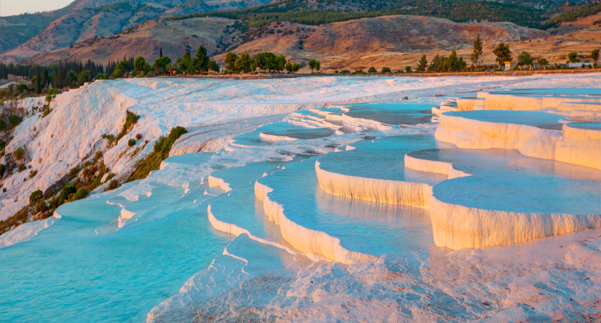
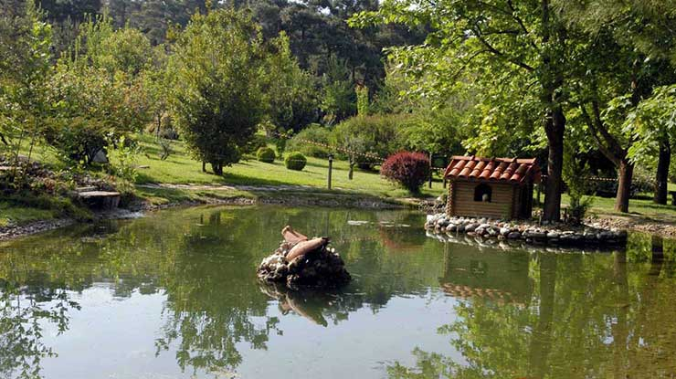

1. Aşama: Tavas
Detaylı içerik tamamlandı; stratejik plan, rota, görsel anlatı ve etkileşimli modüller aktif.
İlçe bazlı gezi, kültür ve planlama içeriklerini buradan keşfedin.
İlçe Rehberi, Denizli ilçeleri için gezi, kültür ve planlama içeriklerini tek bir yapıda toplar. Çalışmaya Tavas ile başlanmış; rota planı, SWOT analizi, gastronomi ve 2030 vizyonu içeren kapsamlı içerik yayına alınmıştır. Diğer ilçeler, aynı kalite standardında kademeli olarak bu yapıya dahil edilecektir.
Detaylı içerik tamamlandı; stratejik plan, rota, görsel anlatı ve etkileşimli modüller aktif.
Doğal miras, termal turizm ve ziyaretçi akışı odaklı içerik paketi aynı yapı ile eklenecek.
Kentsel kültür, yerel yaşam ve belediye planlama ekseninde ilçe sayfası genişletilecek.

Turizm politikası, interaktif SWOT analizi, rota planı ve 2030 vizyonunu içeren kapsamlı Tavas sayfasına geçin.
Detaya Git
Travertenler, antik miras ve termal turizm odaklarıyla ilçeye özel detay içerikler bu bölümde genişletilecektir.
Detay Yakında
İlçe bazlı önemli noktalar, kültürel duraklar ve yerel planlama notları bu karta kademeli olarak eklenecektir.
Detay Yakında